Rugby Overlay の使い方
動画を読み込み、試合を見ながらボタンで記録し、書き出す。この3ステップですべての機能を説明します。
1. インストール
ダウンロードしたzipを開くと現れる RugbyOverlay-x.x.x-arm64.dmg をダブルクリックし、Rugby Overlay.app をアプリケーションフォルダへドラッグしてください。アプリはAppleの公証（ノータリゼーション）を受けているので、初回起動時の確認ダイアログで「開く」を押すだけで使えます。
動作環境: Apple Silicon Mac（M1以降）。Intel Mac・Windowsでは動作しません。
2. 動画を読み込む
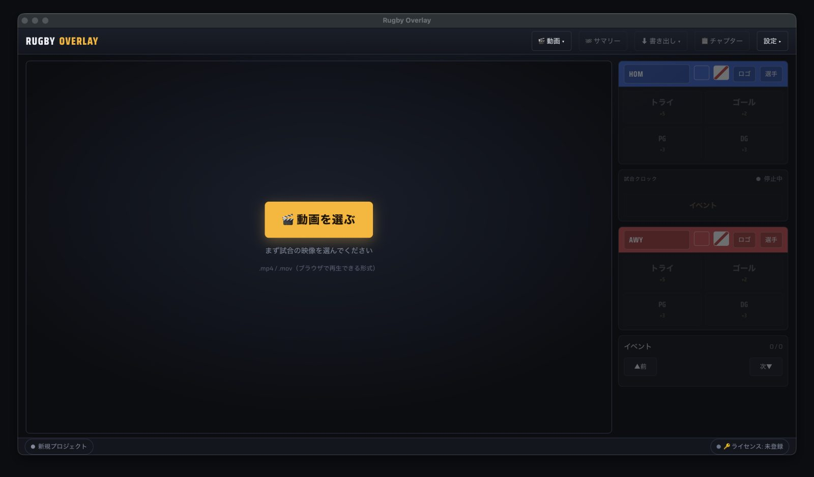
起動直後の画面。「動画を選ぶ」から試合の映像を開きます。
対応形式は .mp4 / .mov（ブラウザで再生できる形式）。iPhoneで撮影した動画（4K・60fps・HDR）もそのまま読み込めます。
AVCHDカメラの .MTS ファイル
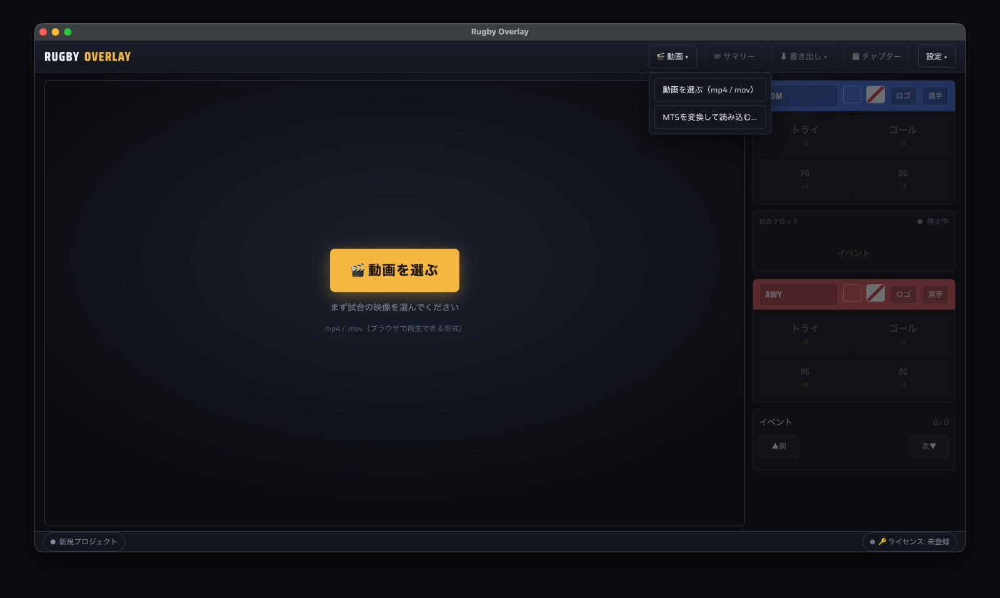
「動画 ▾」メニューの「MTSを変換して読み込む…」で、.MTSを無劣化でmp4に変換してそのまま開けます。
試合データは自動保存
動画を読み込むと、同じ場所に「動画名.json」が自動で作られ、記録した内容は操作のたびに自動保存されます。次に同じ動画を開くと自動で再開します。保存先の変更・別ファイルの読み込みは 設定 → プロジェクト から。別の試合を始めるときは画面左下の「新規プロジェクト」を押してから動画を選んでください。
3. チームを設定する
画面右のチームカード（上=ホーム・下=アウェイ）で設定します。
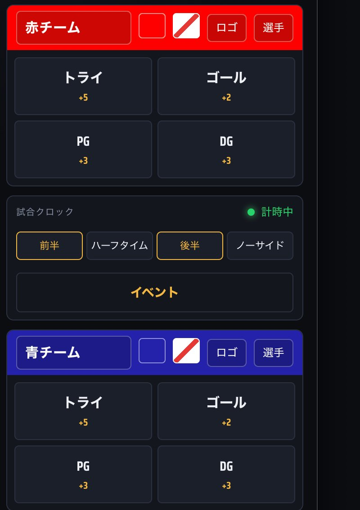
チームカード。名前・カラー2色・ロゴ・選手をここから設定します。カードの下が得点ボタン、中央が試合クロックです。
- チーム名 — カードの名前欄に入力。スコアボードにはこの名前が表示されます
- チームカラー — 名前の右の色ボックスから選択。2色目を設定すると上下2色のジャージ風になります
- ロゴ — 「ロゴ」ボタンから画像を選択（任意）。スコアボードに表示されます
- 選手 — 「選手」ボタン、または 設定 → 選手 で背番号ごとに名前を登録。CSV（number,name）の読み込み・書き出しもできます
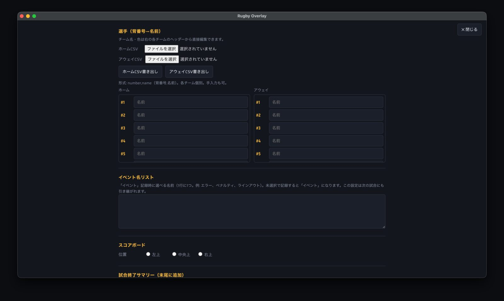
設定画面。選手名簿のCSV入出力、イベント名リスト、スコアボードの表示位置（左上・中央上・右上）もここで変更できます。
4. 試合クロック
キックオフの瞬間に「前半」を押すと、映像に合わせて試合クロックが動き始めます。以降、「ハーフタイム」（クロック停止）→「後半」（再開）→「ノーサイド」（停止）を、映像のその瞬間に押すだけです。
押した区切りはイベント一覧に「区切り」として記録され、後から時刻を修正できます（押し遅れても大丈夫です）。
5. 得点・イベントを記録する
得点
得点が決まった瞬間に、そのチームの トライ(+5)／ゴール(+2)／PG(+3)／DG(+3) ボタンを押します。押すと動画が一時停止し、選手を選べます（選手なしでもOK）。スコアボードのスコアは自動で加算され、テロップ（「トライ #14 ウイングさん」など）が数秒間表示されます。
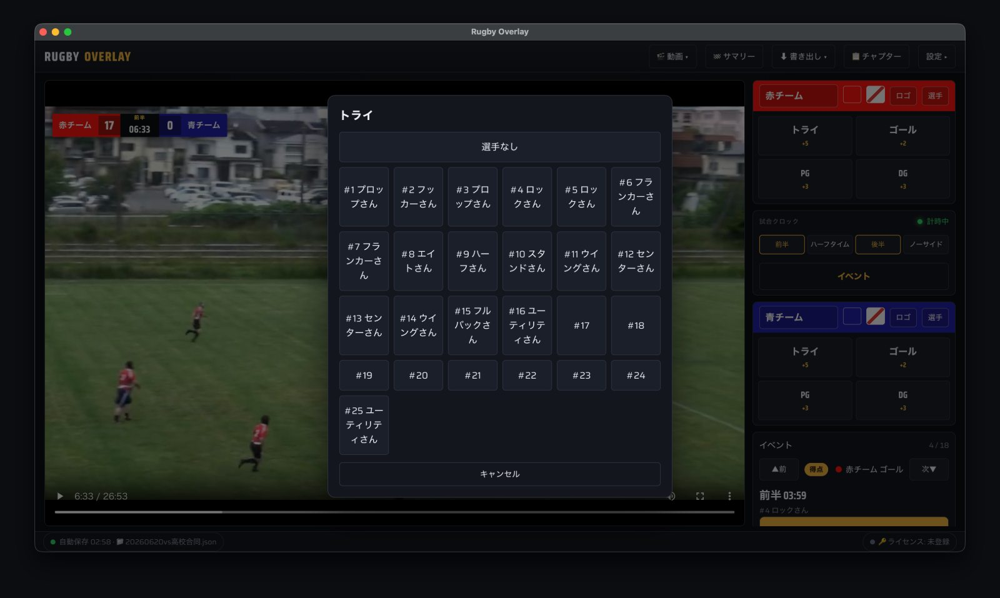
得点ボタンを押すと選手を選択。名簿を登録していれば名前で表示されます。
イベント（好プレー・ペナルティなど）
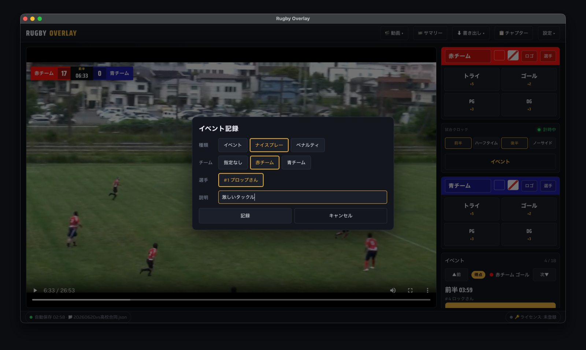
「イベント」ボタンで種類・チーム・選手・説明を記録。種類は 設定 → イベント名リスト で自由に追加できます。
イベントは得点になりませんが、ハイライトやチャプターの材料になります。「ナイスプレー」「ペナルティ」など、あとで見返したい瞬間を気軽に記録してください。
記録の修正
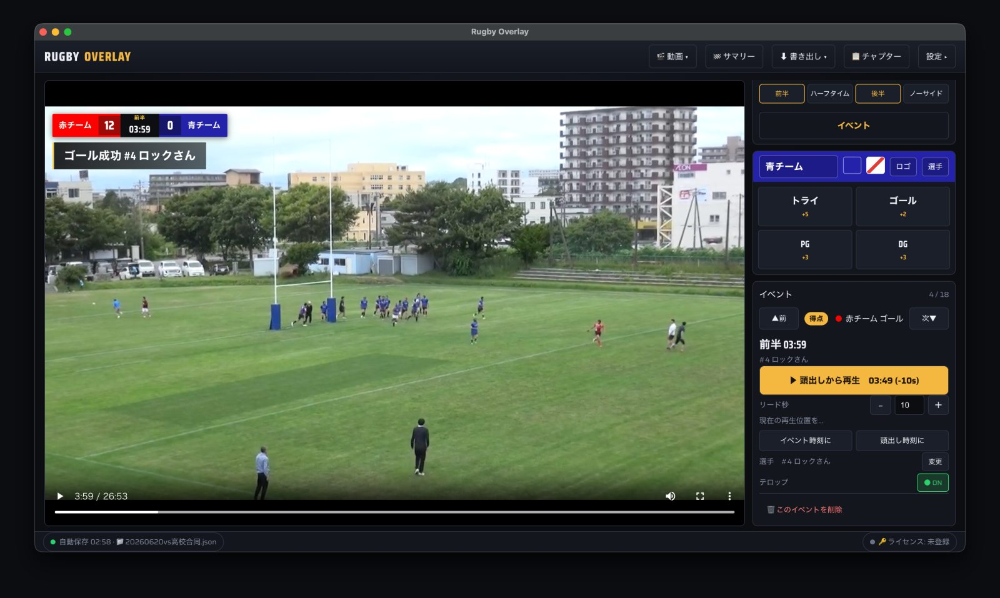
右下のイベント欄で「▲前 / 次▼」で記録を行き来し、選択中のイベントを編集できます。
- 頭出しから再生 — イベントの少し前（リード秒。既定10秒）から再生して確認
- リード秒 — ハイライトでこのイベントの何秒前から収録するか
- 現在の再生位置を「イベント時刻に／頭出し時刻に」 — 映像を見ながら時刻を正確に合わせ直す
- 選手の変更・テロップのON/OFF・イベントの削除もここから
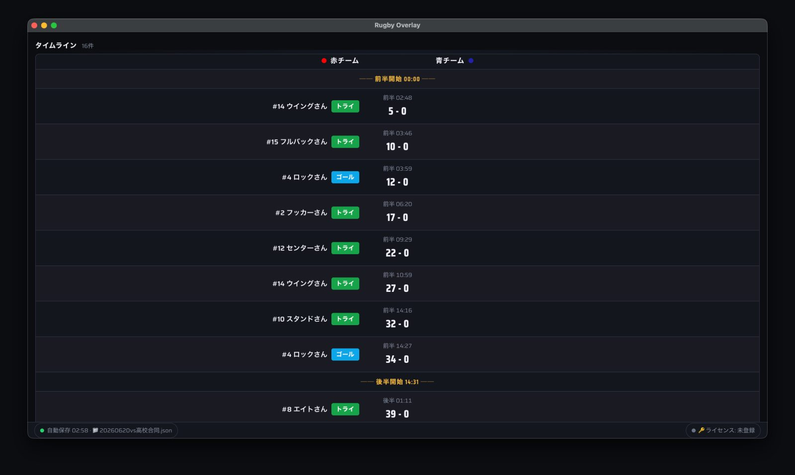
メイン画面を下へスクロールするとタイムライン一覧があり、全記録を見渡して確認・編集できます。
6. 試合終了サマリー
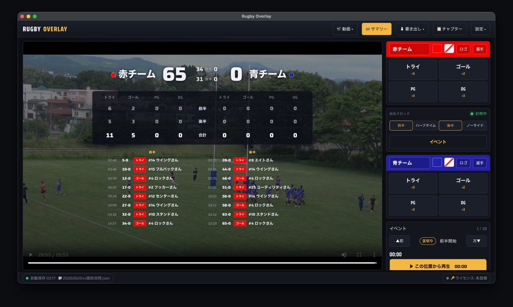
「サマリー」ボタンでプレビュー。書き出すと動画の末尾に数秒間表示されます。
最終スコア・前後半の内訳・種別ごとのスタッツ・得点タイムラインを、動画の最終フレームを背景に表示します。設定 → 試合終了サマリー でON/OFFと表示秒数を変更できます。プレビューを閉じると、見ていた再生位置に戻ります。
7. 全編を書き出す
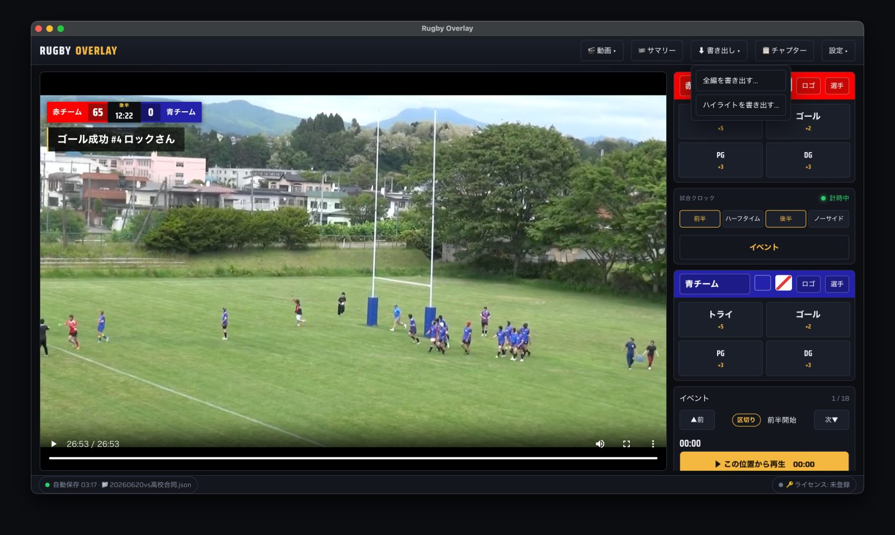
「書き出し ▾」→「全編を書き出す…」
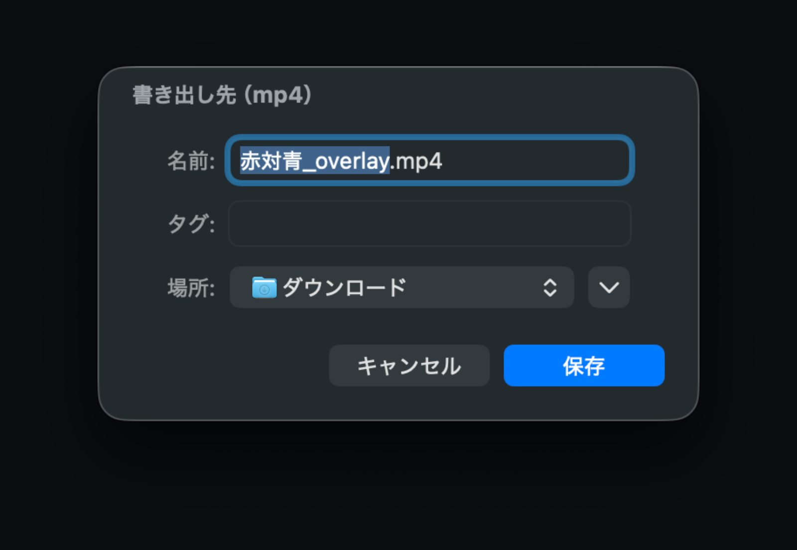
保存先と名前を決めると書き出しが始まります。
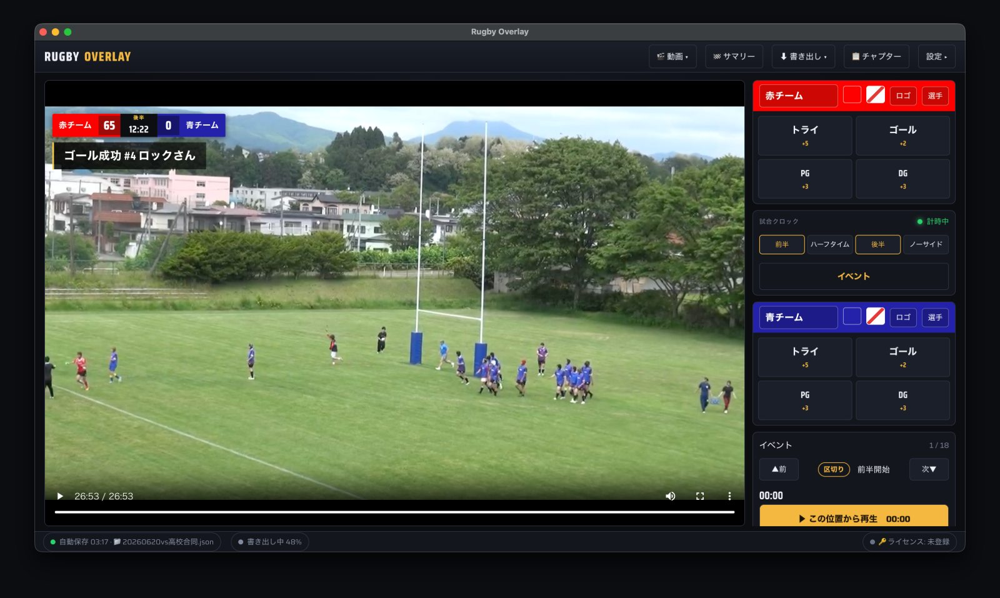
進捗は画面下部に表示。書き出し中もアプリの操作はできます。
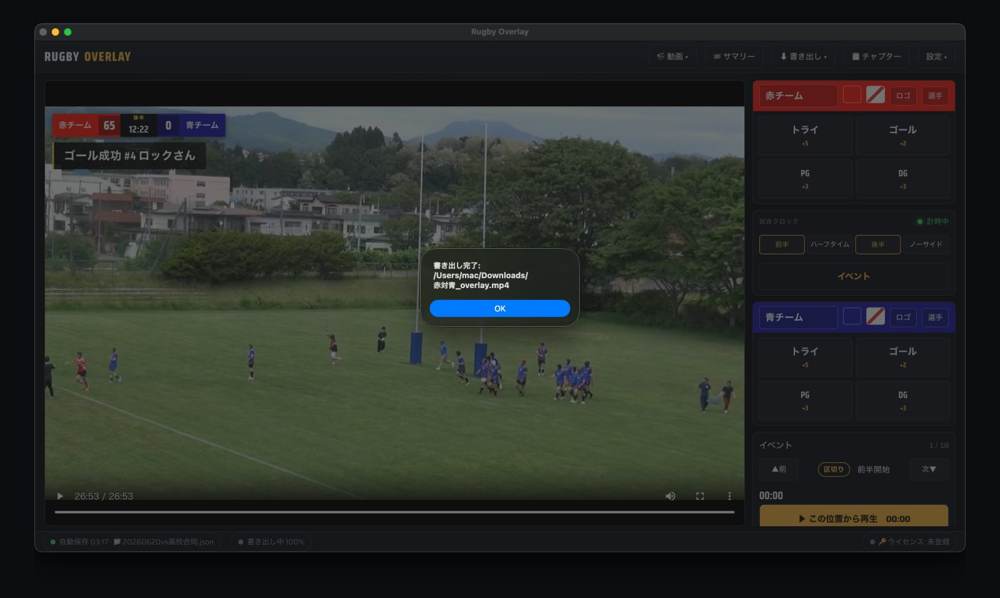
完了すると保存先が表示されます。スコアボード・クロック・テロップ・サマリーがすべて焼き込まれたmp4ができています。
時間の目安: 90分の試合でおよそ15分（M1 Pro・フルHDの場合）。iPhoneのHDR動画は色変換が必要なため、動画の実時間程度かかります。
8. ハイライトを書き出す
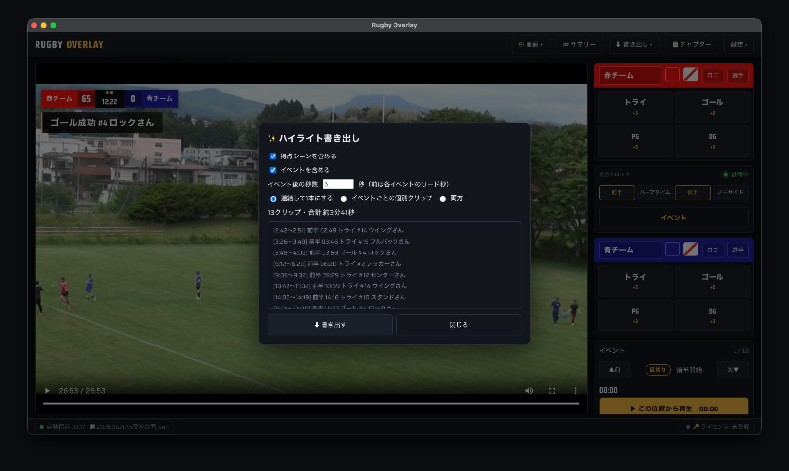
「書き出し ▾」→「ハイライトを書き出す…」。収録シーンの一覧と合計時間を確認してから書き出せます。
- 得点シーンを含める／イベントを含める — ハイライトに入れる記録の種類を選択
- イベント後の秒数 — 各シーンをイベント時刻の何秒後まで収録するか（前は各イベントのリード秒）
- 連結して1本にする／イベントごとの個別クリップ／両方 — 出力形式を選択
各シーンにもスコアボードとテロップが焼き込まれます。SNS共有には連結1本、チーム内での振り返りには個別クリップが便利です。
9. YouTubeチャプター
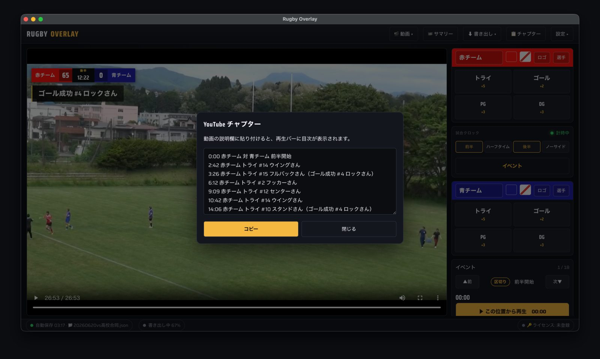
「チャプター」ボタンで目次テキストを生成。「コピー」してYouTubeの説明欄に貼り付けるだけです。
前半開始・各得点・イベントの時刻から自動生成されます。YouTubeにアップした全編動画の説明欄に貼ると、再生バーに目次が表示され、見たい場面へすぐ飛べます（間隔が近い項目は自動でまとめられます）。
10. ライセンス登録（透かしの解除）
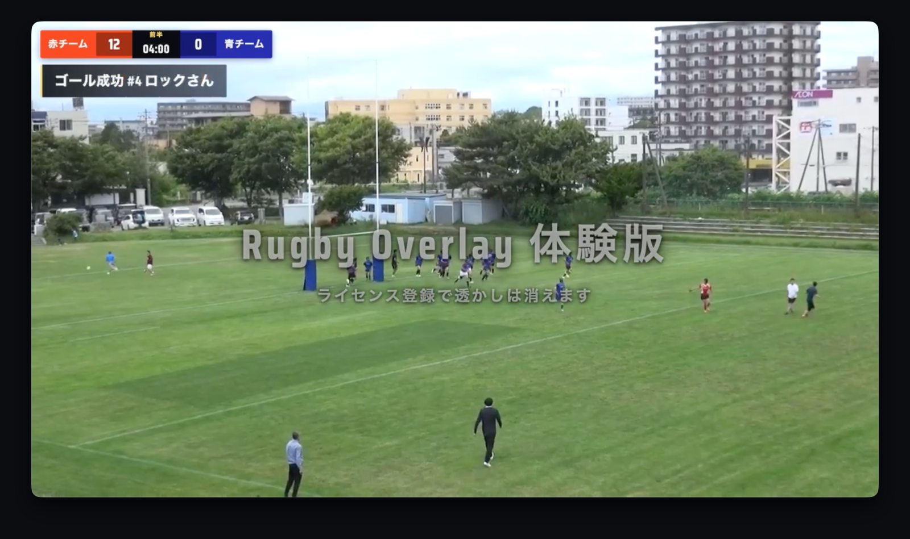
体験版（未登録）の書き出しには、中央に動作確認用の透かしが入ります。機能の制限はありません。
ライセンスキーを購入・登録すると透かしが消えます。登録は 設定 → ライセンス にキー全体（RGBY1.〜）を貼り付けて「登録」を押すだけ。
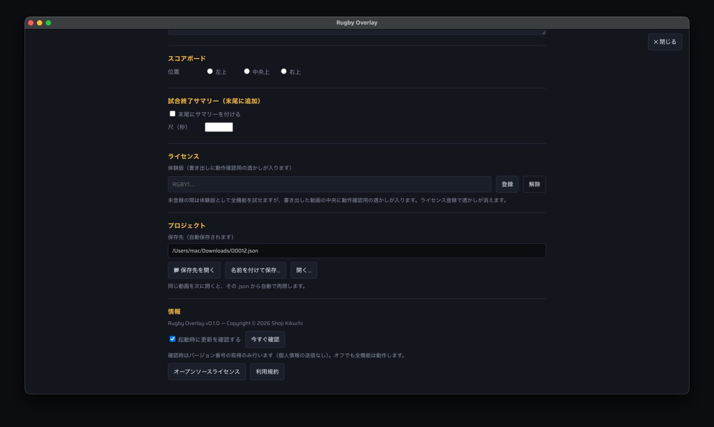
設定画面のライセンス欄。「解除」で体験版に戻すこともできます。
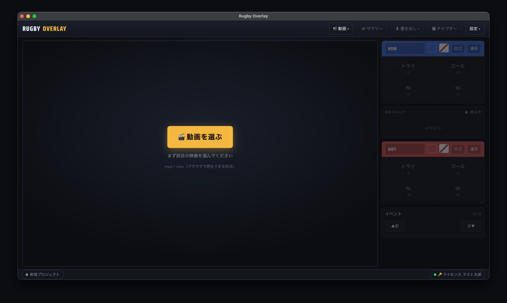
登録されると画面右下に「🔑 ライセンス: 表示名」と表示されます。キーはアップデート後もそのまま有効です。
11. アップデート
起動時に新バージョンの有無を確認し、新しいバージョンがあると画面下部でお知らせします（バージョン番号等の小さな情報を受信するだけで、こちらから情報を送信することはありません。設定 → 情報 でオフにできます）。新しいバージョンは入手先から再ダウンロードし、アプリケーションフォルダへ上書きしてください。ライセンスキーと試合データはそのまま引き継がれます。
12. 便利な操作
- ← → を押している間、コマ送り／コマ戻しできます（得点の瞬間合わせに便利）
- イベント欄の「▲前 / 次▼」で記録済みイベントを順に確認、「頭出しから再生」でそのシーンだけ再生
- 記録ボタンを押すと動画が自動で一時停止するので、プレーを見ながら押して、止まってから詳細を入力できます
- チーム設定・選手名簿・イベント名リストは次の試合に引き継がれます。毎回入力し直す必要はありません
13. 困ったときは
- .MTSがプレビューで再生できない — 仕様です。「動画 ▾」→「MTSを変換して読み込む…」で変換してから開いてください（無劣化・高速です）
- iPhoneの動画の書き出しが遅い — HDR動画（iPhoneの既定設定）は色変換のため、動画の実時間程度かかります。故障ではありません
- 書き出した動画の中央に文字が入る — 体験版の透かしです。ライセンス登録で消えます（10章）
- ライセンスキーをなくした — 購入したストアのメッセージからご連絡ください。購入記録を確認して再送します
- その他の不具合・質問 — 入手先ストアのメッセージからお気軽にどうぞ。アプリのバージョン（設定 → 情報）とmacOSのバージョン、お使いの動画の種類を添えていただけると解決が早くなります